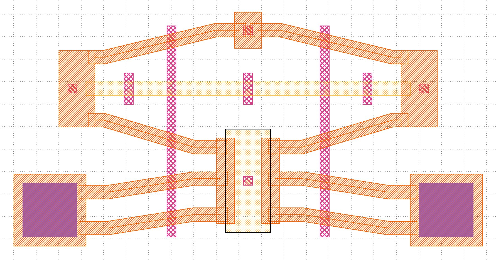
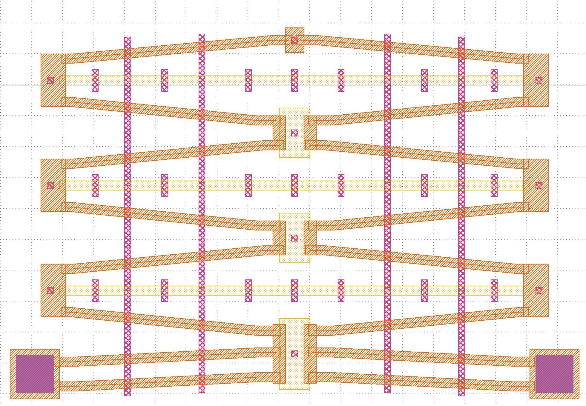

A collection of engineering projects spanning hardware design, soft robotics, MEMS fabrication, biomedical systems, and PLC automation. Each project reflects a different facet of my engineering background.
Tasked with designing a two layer industrial thermostat PCB with an LCD interface, working under real world constraints including size, routing density, and long term reliability requirements. The project required reverse engineering an existing reference board before building forward.
Participated in an extracurricular engineering club project to develop a robotic arm requiring a robust housing structure. Led the mechanical design of the housing, integrating it with the arm's electrical and mechanical subsystems under size, strength, and flexibility constraints.
Designed a hydraulically actuated soft robotic system to grip and twist a 28mm plastic bottle cap using only soft materials — no rigid motors or gears. The system consists of two independently actuated components: an inflatable ring gripper and a fibre-reinforced twisting actuator, both fabricated from Ecoflex 00-30 silicone.
Investigated whether stacking multiple tiers of chevron actuators in a MEMS device produces proportionally greater displacement than a single layer standard chevron actuator fabricated using UBC's in-house 1.5-layer SU-8 photolithography process and physically tested in the lab.


Authored a comprehensive engineering report on transcatheter heart valve (THV) design, covering the biomechanics of the native aortic valve, engineering design requirements for TAVR/TMVR systems, device architecture and materials, deployment mechanics, failure modes, and future directions.
The LEA 2.0 — a portable milk heating and frothing device for Tenebris Coffee — has its own dedicated page.